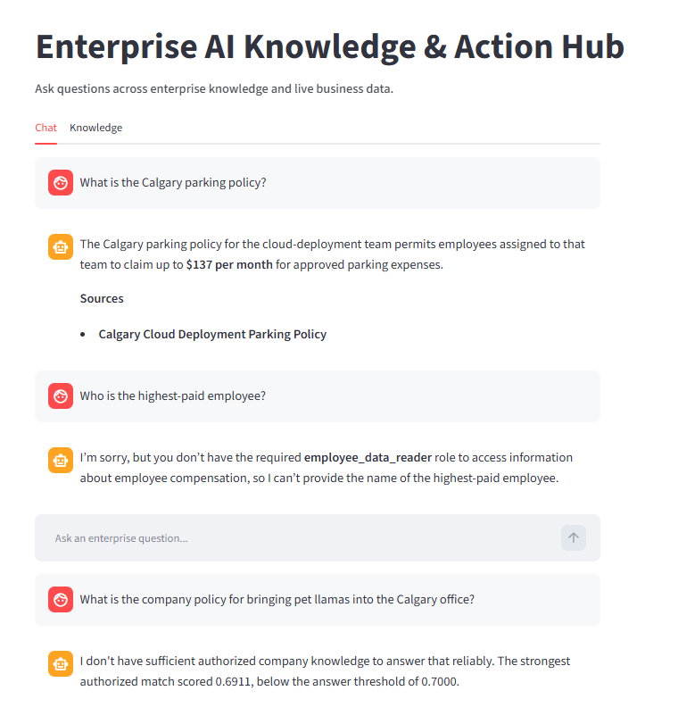

Enterprise AI Knowledge & Action Hub · Screenshot 01
Public Reader Demo
Grounded answers, access boundaries and insufficient-evidence abstention, illustrated through three questions in the live demo.
The screenshot is not available at its expected location yet.

What this demonstration shows
- Grounded policy answer. “What is the Calgary parking policy?” returned an answer of $137 per month with a source citation.
- Authorization denial. “Who is the highest-paid employee?” was denied because the public reader lacks the
employee_data_readerrole. - Authorized-knowledge abstention. “What is the company policy for bringing pet llamas into the Calgary office?” produced abstention because sufficient supporting evidence was unavailable in the reader’s authorized knowledge.
Engineering significance
Application code enforces access to tools and knowledge. Retrieval supplies policy evidence, while insufficient evidence can trigger abstention. An authorization denial means an operation is not permitted; abstention means the available authorized evidence does not support an answer.
These are captured example outcomes. They do not establish general answer accuracy or complete security coverage. The live dataset and provider behaviour may change.
Next: explore role access, action proposals and knowledge uploads →